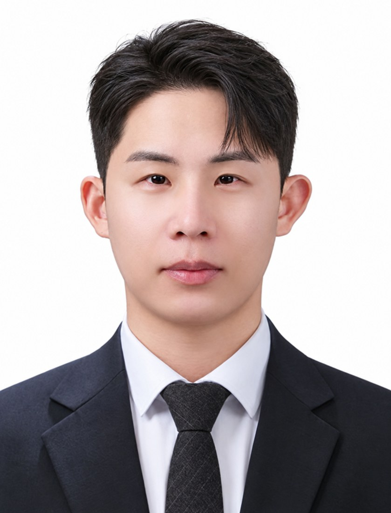

LAB DIRECTOR
이준섭 Jun Seop Lee
Assistant Professor · Architectural Engineering
강구조·합성구조 연구 및 연구실 운영을 담당합니다. 구조성능 실험, 유한요소해석, 구조물 안전성 평가 및 새로운 연결 상세 개발을 중점적으로 수행합니다.
VIEW PROFILE →SCS Lab은 구조공학에 대한 호기심과 협업을 바탕으로 함께 성장하는 연구 환경을 지향합니다.

강구조·합성구조 연구 및 연구실 운영을 담당합니다. 구조성능 실험, 유한요소해석, 구조물 안전성 평가 및 새로운 연결 상세 개발을 중점적으로 수행합니다.
VIEW PROFILE →건축공학을 바탕으로 연구 경험을 쌓아가는 SCS Lab 학부연구생입니다.
건축공학과 · 3학년
건축공학과 · 3학년
구성원 사진은 별도 제공받지 않아 텍스트 프로필로 표시했습니다.
대학원 진학 및 학부연구생 활동에 관심 있는 학생의 상시 방문과 상담을 환영합니다.
학부연구생·대학원생 참여에 관심이 있다면 동의대학교 공학관 625호에 방문해 연구 분야와 참여 가능 일정을 상담할 수 있습니다. 실제 참여 여부와 방식은 면담 후 협의합니다.
관심 분야와 연구 경험을 바탕으로 참여 방향을 함께 논의합니다. 연구 경험이 없어도 상담은 가능합니다.
구조역학의 기초를 실제 연구와 연결하며 논문 읽기, 데이터 정리, 모델링과 실험 보조 등의 활동을 탐색합니다.
강구조·합성구조를 중심으로 실험 계획, 비선형 해석, 연구결과 해석 및 논문 작성 등의 연구 방향을 협의합니다.
Research 페이지에서 강구조, 합성구조, 내화, AI, 내진 분야를 살펴보세요.
공학관 625호에 방문해 면담을 요청해 주세요. 공식 이메일은 leejs@deu.ac.kr 입니다.
연구 관심사, 참여 가능 일정 및 활동 범위를 상담합니다.